Кнопочная SSM панель является неотъемлемой частью полупроводниковой электроники, которая сводит к минимуму количество проводов, механических реле, неизолированных соединений и обеспечивает безотказность и надежность электрической системы.
Мини-погрузчики с бортовым поворотом
от производителя с опытом работы в 180 лет
Остаточная стоимость через 2 года 70%
Лизинг за 7 дней от John Deere Financial
Всегда в наличии 98% всего ассортимента запасных частей
Нужна консультация эксперта по мини-погрузчикам?
Оставьте свои контактные данные, наш эксперт позвонит в течение 30 минут и поможет подобрать мини-погрузчик, отвечающий именно Вашим задачам
Мы регулярно спрашиваем наших клиентов, как сделать наши мини-погрузчики лучше и эффективнее
80% всех улучшений наших мини-погрузчиков сделаны на основе комментариев клиентов, именно по этому они больше прочих отвечают целям и задачам современного Российского строительного бизнеса
01
Герметичная кнопочная панель
02
Регулируемый авто-переход на холостые обороты
Функция авто-перехода на холостые обороты обеспечивает снижение оборотов двигателя, когда гидравлика не используется, заметно снижая расход топлива и уровень шума.
03
Режим ограничения скорости
Режим ограничения скорости полезен при работе в таких условиях, когда обороты двигателя должны быть высокими, а скорость хода — низкой, например работы по выравниванию –грейдированию. Кнопка выбора этого режима находится у основания правого джойстика. Это позволяет выполнять регулировку на ходу.
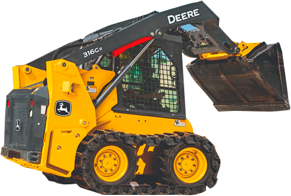
04
ЖК Монитор
Многофункциональный, русифицированный центральный монитор помимо многочисленных сведений о состоянии и общей работе машины отображает данные системы бортовой диагностики о работе большинства датчиков и переключателей, позволяющие быстро устранить неисправность.
05
Память настроек оператора
Точность грейдирования/скорости хода
Ускорение/замедление хода
Выбранная схема работы джойстиков
Точность грейдирования/движений стрелы/ковша
Плавность хода
Самовыравнивание ковша
06
Функции самовыравнивания ковша и регулирования плавности хода
312GR–314G
Только функция самовыравнивания ковша (опция)
316GR–324G
Функция самовыравнивания ковша (опция)
Функции самовы равнивания ковша и регулирования плавности хода (опциональный комбинированный комплект)
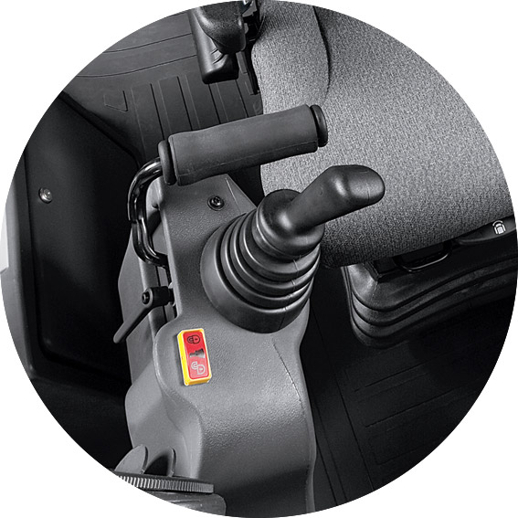
Механические педали или Электрогидравлические джойстики
312GR и 314G: Механические педали и механические рычаги — в стандартной комплектации, Электрогидравлические джойстики — опция
316GR - 324G: Педали — в стандартной комплектации, Электрогидравлические джойстики — в стандартной комплектации, Возможность переключения схемы гидравлических джойстиков (ISO–H) — опция
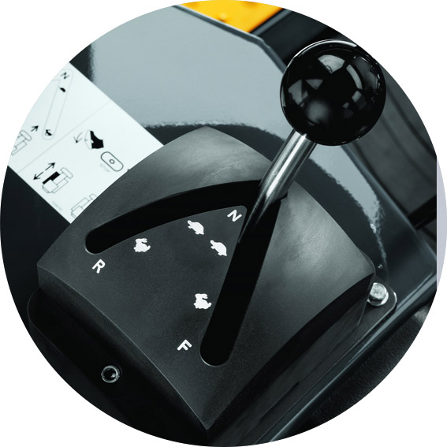
Две скорости
Опция двух скоростей позволяет сократить время рабочего цикла благодаря возможности переключения передач на ходу. Электронное управление переключением скоростей обеспечивет плавное увеличение и снижение скорости и исключает просыпание материала.
Стандартно в отрасле средняя скорость передвижения таких машин 10 км/ч, установка гидромоторов хода с двумя скоростями помогает увеличить скорость до 16 км/ч, что увеличивает производительность машины.
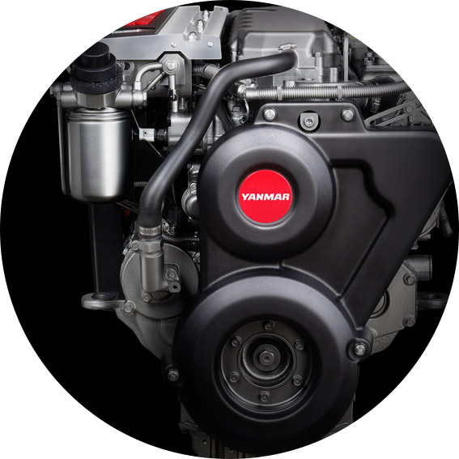
Двигатель Yanmar объемом 3,3 л
Мини – погрузчики оснащается двигателями производства Yanmar с низким уровнем шума и расходом топлива. Двигатели соответствуют стандарту Stage III по составу выбросов выхлопных газов имеют механический насос и адаптированы под топливо с повышенным содержанием серы и влаги и укомплектованы зимним пакетом: подогрев блока цилиндров и подогрев дизельного топлива.
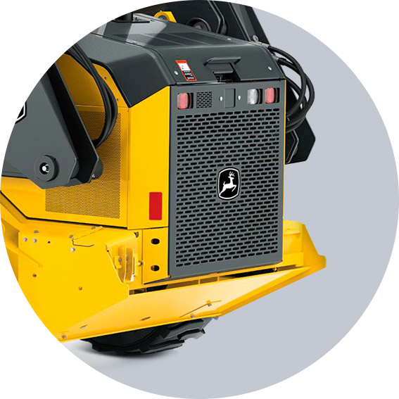
Комплект противовесов
Чтобы увеличить номинальную грузоподъемность, можно заказать опциональный комплект противовесов. Вес противовесов можно регулировать, легко и быстро устанавливая или снимая модульные утяжелители; До трех противовесов с каждой стороны.
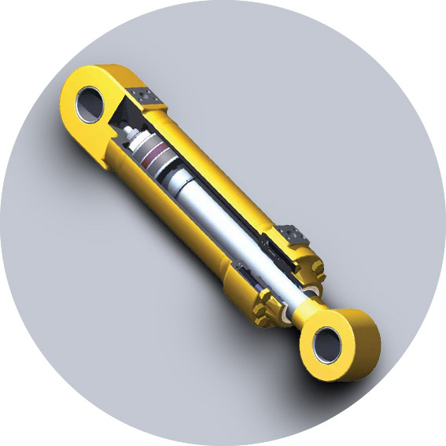
Демпфирующие гидроцилиндры стрелы в стандартной комплектации
Демпфирующие гидроцилиндры опускания стрелы входят в стандартную комплектацию всех минипогрузчиков John Deere. Они обеспечивают плавное замедление в конце циклов опускания и подъема, снижая уровень шума, сокращая объем рассыпаемого при толчках материала и создавая более комфортные условия работы оператора
Техническое обслуживание мини-погрузчиков John Deere значительно проще, чем у других производителей
Чтобы снизить ваши ежедневные эксплуатационные расходы для мини-погрузчиков предусмотрен ряд особенностей, повышающих их эксплуатационную готовность: увеличены межсервисные интервалы, установлена система бортовой диагностики, широко открывающиеся сервисные дверцы облегчают доступ оператора для проведения технического обслуживания.
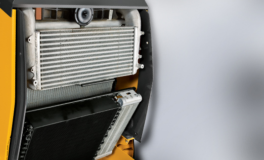
Надежная система охлаждения
Конструкция системы охлаждения обеспечивает эксплуатационную надежность этих машин при работе почти на любых площадках. Установка радиаторов идет друг за другом, чтобы подготовить радиатор к очистке не требуется никаких инструментов — нужно лишь открыть защелку и отвести радиатор в сторону. Радиатор кондиционера, закреплен на верхней крышке.
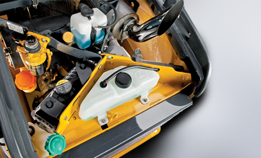
Облегченный доступ для ежедневных проверок
Ежедневные технические проверки легко выполняются на задней стороне машины. Дверь широко раскрывается и может быть зафиксирована в открытом положении специальным пальцем. Заливные горловины баков для технологических жидкостей снабжены на моделях серии G цветными крышками:
Желтый - бак моторного масла;
Черный - бак охлаждающей жидкостидвигателя;
Оранжевый – гидробак;
Зеленый - бак для дизельного топлива.
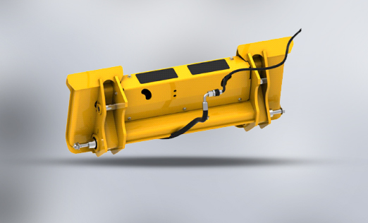
Быстросъемная муфта Quik-Tatch
В передней части стрелы установлена система быстрого подключения навесного оборудования Quik-Tatch™ и быстроразъемные муфты для вспомогательного гидравлического оборудования, входящие в стандартную комплектацию минипогрузчиков с бортовым поворотом. Такая схема монтажа является универсальной и позволяет использовать навесное оборудование от John Deere и многочисленные виды навесного оборудования конкурирующих марок.
Использование системы Quik-Tatch™ существенно ускоряет процесс замены навесного оборудования.
Модельный ряд мини-погрузчиков John Deere
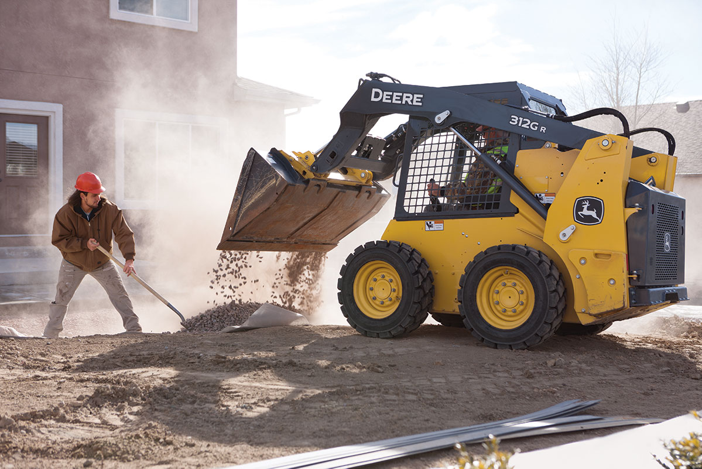
Мини-погрузчик John Deere 312G
- Полезная мощность (SAE)
34 кВт. (46 л.с.) при 2600 об/мин
- Эксплуатационная масса
2722 кг
- Грузоподъемность
704 кг (без противовеса)
- Усилие отрыва на ковше:
1680 кг
Прежде чем приступать к проектированию машин серии G, мы обсудили с заказчиками их требования и ожидания от погрузчика с бортовым поворотом. Когда комментарии были собраны и проанализированы, мы засучили рукава и начали воплощать идеи в реальность. Что же получилось? Четыре новые модели со стрелами с вертикальным и радиальным подъемом. Эти универсальные машины отличаются улучшенными спецификациями и доступны с расширенным пакетом опций, поэтому в них есть все, что необходимо для работы, где бы Вам ни пришлось ее выполнять.
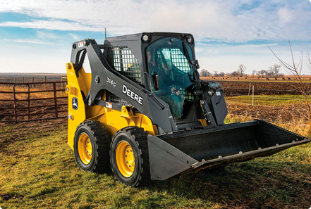
Мини-погрузчик John Deere 314G
- Полезная мощность (SAE)
34 кВт (46 л.с.) при 2600 об/мин
- Эксплуатационная масса
2867 кг
- Грузоподъемность
799 кг (без противовеса)
- Усилие отрыва на ковше:
1587 кг
Перед созданием машин серии G с малой рамой мы спросили у заказчиков, какие характеристики они хотят видеть в погрузчике с бортовым поворотом. Проанализировав эту информацию, мы принялись за работу. И что же получилось в итоге? 4 новые модели со стрелами с вертикальным и радиальным подъемом. Эта универсальная техника обладает улучшенными характеристиками и предлагается с широким пакетом опций, поэтому вы найдете в ней все, что нужно для работы в любых условиях.
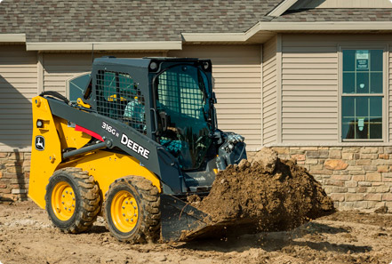
Мини-погрузчик John Deere 316GR
- Полезная мощность (SAE)
42 кВт (56 л.с.) при 2600 об/мин
- Эксплуатационная масса
2894 кг
- Грузоподъемность
795 кг (без противовеса)
- Усилие отрыва на ковше:
1816 кг
Прежде чем приступать к проектированию машин серии G, мы обсудили с заказчиками их требования и ожидания от погрузчика с бортовым поворотом. Когда комментарии были собраны и проанализированы, мы засучили рукава и начали воплощать идеи в реальность. Что же получилось? Четыре новые модели со стрелами с вертикальным и радиальным подъемом. Эти универсальные машины отличаются улучшенными спецификациями и доступны с расширенным пакетом опций, поэтому в них есть все, что необходимо для работы, где бы Вам ни пришлось ее выполнять.
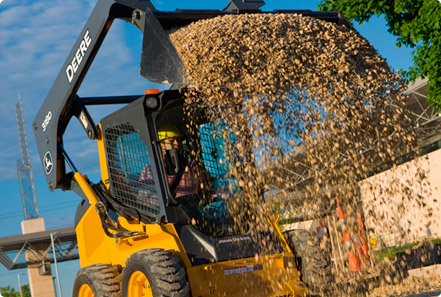
Мини-погрузчик John Deere 318G
- Полезная мощность (SAE)
42 кВт (56 л.с.) при 2600 об/мин
- Эксплуатационная масса
2940 кг
- Грузоподъемность
883 кг (без противовеса)
- Усилие отрыва на ковше:
1930 кг
Перед тем, как начать проектирование машин из линейки G, мы изучили, какие требования выдвигают пользователи к новым погрузчикам с бортовым поворотом. Собрав и проанализировав комментарии заказчиков, мы приступили к реализации этих идей. В результате на рынке появились 4 новые модели погрузчиков, оснащенные стрелами с радиальным и вертикальным подъемом. В серию G входят универсальные машины, которые отличаются улучшенными спецификациями. Для всех моделей доступен расширенный набор опций. Поэтому такая техника обладает всем необходимым функционалом для любых условий ее применения.
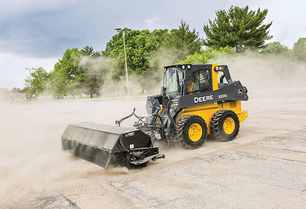
Мини-погрузчик John Deere 320G
- Полезная мощность (SAE)
49 кВт (66 л.с.) при 2500 об/мин
- Эксплуатационная масса
3246 кг
- Грузоподъемность
994 кг (без противовеса)
- Усилие отрыва на ковше:
1905 кг
Обладая впечатляющими характеристиками и набором функций для повышения производительности, погрузчики с бортовым поворотом 320G и 324G легко справляются с самыми тяжелыми нагрузками и готовы к выполнению новых задач. Переработанная конструкция погрузочного механизма с вертикальным подъемом, которым оснащаются эти компактные модели, обеспечивает большую высоту подъема и больший вынос, что ускоряет и облегчает процесс погрузки. Погрузчики с бортовым поворотом серии G демонстрируют также значительно большее вырывное усилие на стреле, благодаря чему эти машины способны выполнять более разнообразные задачи.
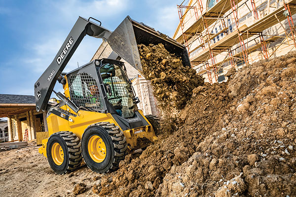
Мини-погрузчик John Deere 324G
- Полезная мощность (SAE)
52,7 кВт (71 л.с.) при 2500 об/мин
- Эксплуатационная масса
3496 кг
- Грузоподъемность
1221 кг (без противовеса)
- Усилие отрыва на ковше:
2724 кг
Обладая впечатляющими характеристиками и набором функций для повышения производительности, погрузчики с бортовым поворотом 320G и 324G легко справляются с самыми тяжелыми нагрузками и готовы к выполнению новых задач. Переработанная конструкция погрузочного механизма с вертикальным подъемом, которым оснащаются эти компактные модели, обеспечивает большую высоту подъема и больший вынос, что ускоряет и облегчает процесс погрузки. Погрузчики с бортовым поворотом серии G демонстрируют также значительно большее вырывное усилие на стреле, благодаря чему эти машины способны выполнять более разнообразные задачи.
Сравнительная таблица основных характеристик мини-погрузчиков John Deere
| Модель | МОЩНОСТЬ ДВИГАТЕЛЯ, КВТ./Л.С. | Эксплуатационная масса | НОМИНАЛЬНАЯ ГРУЗОПОДЪЕМНОСТЬ (БЕЗ ПРОТИВОВЕСА), КГ | УСИЛИЕ ОТРЫВА НА КОВШЕ, КГ |
|---|---|---|---|---|
| 312GR | 34 кВт. (46 л.с.) при 2600 об/мин | 2722 кг | 704 кг (без противовеса) | 1680 кг |
| 314G | 34 кВт (46 л.с.) при 2600 об/мин | 2867 кг | 799 кг (без противовеса) | 1587 кг |
| 316GR | 42 кВт (56 л.с.) при 2600 об/мин | 2894 кг | 795 кг (без противовеса) | 1816 кг |
| 318G | 42 кВт (56 л.с.) при 2600 об/мин | 2940 кг | 883 кг (без противовеса) | 1930 кг |
| 320G | 49 кВт (66 л.с.) при 2500 об/мин | 3246 кг | 994 КГ (без противовеса) | 1905 кг |
| 324G | 52,7 кВт (71 л.с.) при 2500 об/мин | 3496 кг | 1221 КГ (без противовеса) | 2724 кг |
Посмотрите на наши экскаваторы-погрузчики в работе
JOHN DEERE 318G. Погрузчик/вертикал с бортовым поворотом, г/п- 863кг.
Погрузчик с бортовым поворотом 318G от John Deere
Технологии, входящие в состав стандартной комплектации техники, позволяют сократить простои и упредить поломки
Решения John Deere WorkSight - это набор простых в использовании технологических решений, направленных на оптимизацию способов работы машины, эксплуатационной надежности и рабочей площадки. Они предназначены для управления парком техники любого размера, начиная с одной единицы до крупных смешанных парков. Эти технологии позволят повысить рентабельность строительных проектов за счет достижения максимально возможной производительности техники и максимального времени ее безотказной работы при одновременной оптимизации эксплуатационных расходов.
Технологические решения John Deere WorkSight
Сокращение простоев техники с John Deere WorkSight
Оптимизация работы парка техники с John Deere WorkSight
80% НЕИСПРАВНОСТЕЙ МАШИНЫ МЫ МОЖЕМ ПРОДИАГНОСТИРОВАТЬ И ПРЕДУПРЕДИТЬ В ТЕЧЕНИЕ ДВУХ ЧАСОВ
Мы круглосуточно проверяем всю проданную технику на неисправности и сообщаем об этом клиентам. Большинство проблем предупреждаем удаленно и заранее при помощи системы JDLink, не выставляя счета за пробег и не тратя лишнего времени.
Система телематики JDLink
Позволяет реализовать все возможности по повышению прибыли, заложенные в пакет решений John Deere WorkSight. Она помогает централизованно осуществлять «умное» управление всем парком техники и расширять бизнес благодаря массе возможностей — от предоставления базовых данных, до отправки предупреждений о состоянии машин и отслеживания эффективности работы. Ваш дилер John Deere может помочь Вам сократить простои техники, оценив и выполнив сброс диагностических кодов неисправностей и выполнив запись показателей работы машин в удаленном режиме, благодаря доступным в составе John Deere WorkSight уникальным функциям удаленной диагностики и программирования.
Возможности JDLink - системы удаленного мониторинга для управления парком техники
Управление техникой
-
Контроль
-
Информация о том, где находится ваша техника
-
Информация о том, работе и простоях машины
-
Уведомления
-
Уведомления о состоянии вашей машины
-
Уведомления при возникновении проблем (по электронной почте или SMS)
-
Наработка и обслуживание
-
Информация о цикле жизни/работе фильтров
-
Информация о необходимости сервисных работ
Оптимизация рабочей площадки
-
Производительность машины
-
Информация, позволяющая оценить эффективность работы машины на данной площадке
-
Загрузка машины
-
Информация о том, сколько тонн перевезено и сколько циклов завершено
-
Местоположение на рабочей площадке
-
Информация о том, на какой рабочей площадке находится машина и как она используется
Оптимизация рабочего времени
-
Удаленное программирование
-
Скачивание и установка обновлений удаленно
-
Диагностические коды неисправностей
-
Проверка ошибок в удаленном режиме
-
Удаленная диагностика
-
Беспроводное подключение к машине и устранение неисправности без выезда к оборудованию
Оптимизация парка оборудования
-
Данные о расходе топлива
-
Узнайте средний расход топлива за конкретный период
-
Использование двигателя
-
Информация о времени простоя и работы оборудования
-
Использование топлива машиной
-
Информация об общем расходе топлива
Выставочный зал техники есть в каждом нашем филиале
Мы имеем 15 дилерских центров в России. Расположение филиалов — не более 150 км до самого дальнего клиента — позволяет оперативно реагировать на запросы заказчиков и оказывать необходимое сервисное обслуживание. Региональные площадки располагают службами продаж и сервиса, выставочными экспозициями техники и складами запасных частей.
Забронируйте удобные дату и время посещения ближайшего Выставочного центра John Deere
Чтобы там Вас сопровождал эксперт, который сможет ответить на любой вопрос
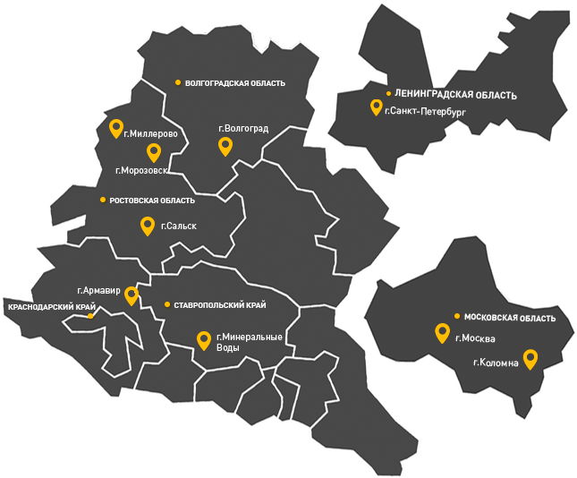
Уже 180 лет мы производим машины которые годами работают без капитального ремонта
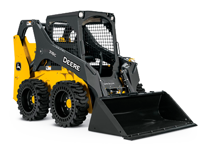
Мини-погрузчики
Грузоподъемность без противовеса до 1221 кг
Получить консультацию Выбрать модельВ любом регионе России есть несколько десятков крупных строительных компаний, использующих технику John Deere
- 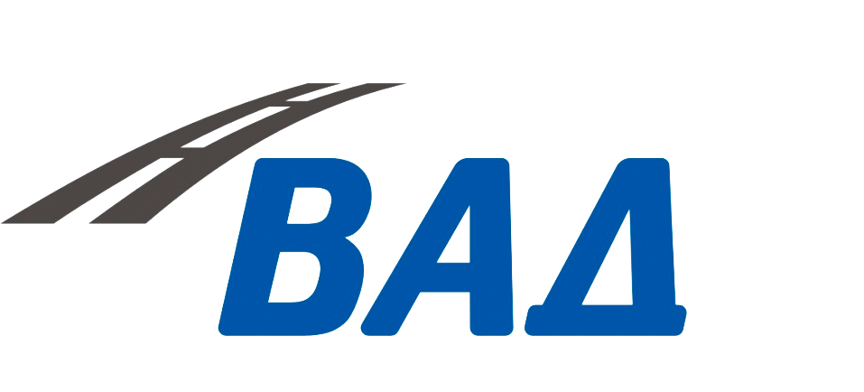
- 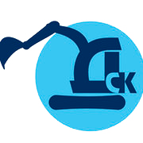

- 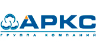
- 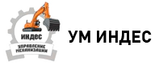
- 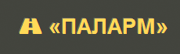
- 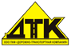


{kind=link}
{kind=link}
{kind=link}
{kind=link}
{kind=link}